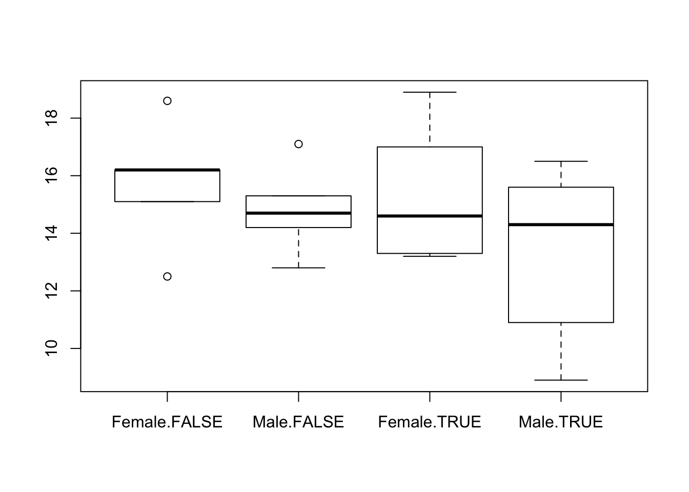

Assignments Modern Methods in Data Analysis
Wouter van Amsterdam
2018-01-08
Last updated: 2018-01-08
Code version: c501028
Setup
Load some packages
library(epistats) # contains 'fromParentDir' and other handy functions
library(magrittr) # for 'piping' '%>%'
library(dplyr) # for data mangling, selecting columns and filtering rows
library(ggplot2) # awesome plotting library
library(stringr) # for working with stringsDay 1 Linear models
First read in the data:
y <- c(87,86.5,89,88.5,87.5,88,86.5,87,85,86,85,83)
dose <- c(5,6,7,8,9,10,5,6,7,8,9,10)
group <- c(0,0,0,0,0,0,1,1,1,1,1,1)
model.an <- glm(y~factor(group), family = gaussian)
names(model.an) [1] "coefficients" "residuals" "fitted.values"
[4] "effects" "R" "rank"
[7] "qr" "family" "linear.predictors"
[10] "deviance" "aic" "null.deviance"
[13] "iter" "weights" "prior.weights"
[16] "df.residual" "df.null" "y"
[19] "converged" "boundary" "model"
[22] "call" "formula" "terms"
[25] "data" "offset" "control"
[28] "method" "contrasts" "xlevels" model.an$coefficients (Intercept) factor(group)1
87.750000 -2.333333 summary(model.an)
Call:
glm(formula = y ~ factor(group), family = gaussian)
Deviance Residuals:
Min 1Q Median 3Q Max
-2.4167 -0.5000 0.0000 0.8333 1.5833
Coefficients:
Estimate Std. Error t value Pr(>|t|)
(Intercept) 87.7500 0.4930 177.989 < 2e-16 ***
factor(group)1 -2.3333 0.6972 -3.347 0.00741 **
---
Signif. codes: 0 '***' 0.001 '**' 0.01 '*' 0.05 '.' 0.1 ' ' 1
(Dispersion parameter for gaussian family taken to be 1.458333)
Null deviance: 30.917 on 11 degrees of freedom
Residual deviance: 14.583 on 10 degrees of freedom
AIC: 42.394
Number of Fisher Scoring iterations: 2Fit without interaction
model.anc <- glm(y~factor(group)+dose, family = gaussian)
summary(model.anc)
Call:
glm(formula = y ~ factor(group) + dose, family = gaussian)
Deviance Residuals:
Min 1Q Median 3Q Max
-1.8809 -0.7143 0.3095 0.8036 1.2619
Coefficients:
Estimate Std. Error t value Pr(>|t|)
(Intercept) 89.3571 1.5992 55.876 9.48e-13 ***
factor(group)1 -2.3333 0.6933 -3.366 0.00831 **
dose -0.2143 0.2030 -1.056 0.31858
---
Signif. codes: 0 '***' 0.001 '**' 0.01 '*' 0.05 '.' 0.1 ' ' 1
(Dispersion parameter for gaussian family taken to be 1.441799)
Null deviance: 30.917 on 11 degrees of freedom
Residual deviance: 12.976 on 9 degrees of freedom
AIC: 42.993
Number of Fisher Scoring iterations: 2drop1(model.anc, test = "F")Single term deletions
Model:
y ~ factor(group) + dose
Df Deviance AIC F value Pr(>F)
<none> 12.976 42.993
factor(group) 1 29.309 50.771 11.3284 0.008313 **
dose 1 14.583 42.394 1.1147 0.318583
---
Signif. codes: 0 '***' 0.001 '**' 0.01 '*' 0.05 '.' 0.1 ' ' 1Get interaction plot
interaction.plot(dose, group, y, mean, ylab = "Blood pressure")
Excercise 1
load(fromParentDir("data/starfish.RData"))
str(starfish)'data.frame': 13 obs. of 3 variables:
$ starfish: num 1 2 3 4 5 6 7 8 9 10 ...
$ location: Factor w/ 2 levels "A","B": 1 1 1 1 1 1 1 2 2 2 ...
$ metabole: num 173 162 176 181 164 169 170 185 164 177 ...
- attr(*, "variable.labels")= Named chr "starfish number" "location" "metabole concentratio"
..- attr(*, "names")= chr "starfish" "location" "metabole"a. create boxplot
boxplot(metabole~location, data = starfish)
b. fit ANOVA
fit <- lm(metabole~location, data = starfish)
summary(fit)
Call:
lm(formula = metabole ~ location, data = starfish)
Residuals:
Min 1Q Median 3Q Max
-9.5000 -5.5000 -0.7143 3.5000 11.5000
Coefficients:
Estimate Std. Error t value Pr(>|t|)
(Intercept) 170.714 2.631 64.890 1.44e-15 ***
locationB 2.786 3.872 0.719 0.487
---
Signif. codes: 0 '***' 0.001 '**' 0.01 '*' 0.05 '.' 0.1 ' ' 1
Residual standard error: 6.96 on 11 degrees of freedom
Multiple R-squared: 0.04493, Adjusted R-squared: -0.04189
F-statistic: 0.5175 on 1 and 11 DF, p-value: 0.4869c. create ANOVA table
(requires some extra work, but this gets you in the direction)
aov(fit)Call:
aov(formula = fit)
Terms:
location Residuals
Sum of Squares 25.0714 532.9286
Deg. of Freedom 1 11
Residual standard error: 6.960463
Estimated effects may be unbalancedd. test group differences
From the summary it is clear that the mean metabole is not significantly different between the two locations.
We are testing:
\[H_0: mean(metabole_{LocA}) = mean(metabole_{LocB}) = mean(metabole)\]
Versus
\[H_1: mean(metabole_{LocA}) \neq mean(metabole_{LocB})\]
2. Hormone treatment and blood calcium
I could not find the data file, so here is it:
df <- data.frame(
sex = rep(rep(c("Female", "Male"), each = 5), 2),
hormone = rep(c(TRUE, FALSE), each = 10),
calcium = c(17, 18.9, 13.2, 14.6, 13.3,
16.5, 14.3, 10.9, 15.6, 8.9,
18.6, 16.2, 12.5, 15.1, 16.2,
17.1, 14.7, 15.3, 14.2, 12.8)
)
df sex hormone calcium
1 Female TRUE 17.0
2 Female TRUE 18.9
3 Female TRUE 13.2
4 Female TRUE 14.6
5 Female TRUE 13.3
6 Male TRUE 16.5
7 Male TRUE 14.3
8 Male TRUE 10.9
9 Male TRUE 15.6
10 Male TRUE 8.9
11 Female FALSE 18.6
12 Female FALSE 16.2
13 Female FALSE 12.5
14 Female FALSE 15.1
15 Female FALSE 16.2
16 Male FALSE 17.1
17 Male FALSE 14.7
18 Male FALSE 15.3
19 Male FALSE 14.2
20 Male FALSE 12.8a. create boxplot
boxplot(calcium ~ sex + hormone, data = df)
b. fit ANOVA
fit <- lm(calcium ~ factor(sex) + factor(hormone), data = df)c. test hypothosis
summary(fit)
Call:
lm(formula = calcium ~ factor(sex) + factor(hormone), data = df)
Residuals:
Min 1Q Median 3Q Max
-4.655 -1.725 0.165 1.948 3.815
Coefficients:
Estimate Std. Error t value Pr(>|t|)
(Intercept) 16.0350 0.9286 17.267 3.25e-12 ***
factor(sex)Male -1.5300 1.0723 -1.427 0.172
factor(hormone)TRUE -0.9500 1.0723 -0.886 0.388
---
Signif. codes: 0 '***' 0.001 '**' 0.01 '*' 0.05 '.' 0.1 ' ' 1
Residual standard error: 2.398 on 17 degrees of freedom
Multiple R-squared: 0.1423, Adjusted R-squared: 0.04141
F-statistic: 1.41 on 2 and 17 DF, p-value: 0.2712For both grouping variables, there is no significant difference between the means of the calcium levels.
e. estimate difference between hormone groups
df %>%
group_by(hormone) %>%
summarize(mean(calcium))# A tibble: 2 x 2
hormone `mean(calcium)`
<lgl> <dbl>
1 FALSE 15.27
2 TRUE 14.323. Alligators
Load data
load(fromParentDir("data/alligator.RData"))
str(alligator)'data.frame': 25 obs. of 2 variables:
$ WEIGHT: num 130 51 640 28 80 110 33 90 36 83 ...
$ LENGTH: num 94 74 147 58 86 94 63 86 69 86 ...a. scatterplot
plot(WEIGHT~LENGTH, data = alligator)b. Scatterplot with log-transform
plot(log(WEIGHT)~log(LENGTH), data = alligator)
c. compare
The relationship between \(ln(weight)\) and \(ln(length)\) seems to fit a straight line better.
d. linear fit
fit <- lm(log(WEIGHT)~log(LENGTH), data = alligator)
fit$coefficients(Intercept) log(LENGTH)
-10.174601 3.285993 This gives rise to the following equation:
\[ln(Weight_i) = *ln(Length_i) + -10.2\]
e. ANOVA table and conclusion
aov(fit) %>% summary() Df Sum Sq Mean Sq F value Pr(>F)
log(LENGTH) 1 12.132 12.132 394.7 5.59e-16 ***
Residuals 23 0.707 0.031
---
Signif. codes: 0 '***' 0.001 '**' 0.01 '*' 0.05 '.' 0.1 ' ' 1There seems to be a significant relationship between length and weight.
Looking at the model fit
summary(fit)
Call:
lm(formula = log(WEIGHT) ~ log(LENGTH), data = alligator)
Residuals:
Min 1Q Median 3Q Max
-0.31849 -0.09846 0.00690 0.07618 0.45049
Coefficients:
Estimate Std. Error t value Pr(>|t|)
(Intercept) -10.1746 0.7316 -13.91 1.10e-12 ***
log(LENGTH) 3.2860 0.1654 19.87 5.59e-16 ***
---
Signif. codes: 0 '***' 0.001 '**' 0.01 '*' 0.05 '.' 0.1 ' ' 1
Residual standard error: 0.1753 on 23 degrees of freedom
Multiple R-squared: 0.9449, Adjusted R-squared: 0.9425
F-statistic: 394.7 on 1 and 23 DF, p-value: 5.588e-16The \(R^2\) is very high, so most of the variation in weight can be explained with length.
Excercise 4. Blood pressure and treatment
This excercise was skipped for now It is not completely clear which dataset is referred to.
bp <- data.frame(
treatment = rep(c("placebo", "treatment"), each = 6),
sbp = c(87,68.5,89,88.5,87.5,88,
86.5,87,85,86,85,83))5. Low birth weight
lowb <- read.table(file = fromParentDir("data/lowbirth.dat"),
header = T)
lowb id low age lwt race smoke ptl ht ui ftv bwt
1 85 0 19 182 2 0 0 0 1 0 2523
2 86 0 33 155 3 0 0 0 0 3 2551
3 87 0 20 105 1 1 0 0 0 1 2557
4 88 0 21 108 1 1 0 0 1 2 2594
5 89 0 18 107 1 1 0 0 1 0 2600
6 91 0 21 124 3 0 0 0 0 0 2622
7 92 0 22 118 1 0 0 0 0 1 2637
8 93 0 17 103 3 0 0 0 0 1 2637
9 94 0 29 123 1 1 0 0 0 1 2663
10 95 0 26 113 1 1 0 0 0 0 2665
11 96 0 19 95 3 0 0 0 0 0 2722
12 97 0 19 150 3 0 0 0 0 1 2733
13 98 0 22 95 3 0 0 1 0 0 2750
14 99 0 30 107 3 0 1 0 1 2 2750
15 100 0 18 100 1 1 0 0 0 0 2769
16 101 0 18 100 1 1 0 0 0 0 2769
17 102 0 15 98 2 0 0 0 0 0 2778
18 103 0 25 118 1 1 0 0 0 3 2782
19 104 0 20 120 3 0 0 0 1 0 2807
20 105 0 28 120 1 1 0 0 0 1 2821
21 106 0 32 121 3 0 0 0 0 2 2835
22 107 0 31 100 1 0 0 0 1 3 2835
23 108 0 36 202 1 0 0 0 0 1 2836
24 109 0 28 120 3 0 0 0 0 0 2863
25 111 0 25 120 3 0 0 0 1 2 2877
26 112 0 28 167 1 0 0 0 0 0 2877
27 113 0 17 122 1 1 0 0 0 0 2906
28 114 0 29 150 1 0 0 0 0 2 2920
29 115 0 26 168 2 1 0 0 0 0 2920
30 116 0 17 113 2 0 0 0 0 1 2920
31 117 0 17 113 2 0 0 0 0 1 2920
32 118 0 24 90 1 1 1 0 0 1 2948
33 119 0 35 121 2 1 1 0 0 1 2948
34 120 0 25 155 1 0 0 0 0 1 2977
35 121 0 25 125 2 0 0 0 0 0 2977
36 123 0 29 140 1 1 0 0 0 2 2977
37 124 0 19 138 1 1 0 0 0 2 2977
38 125 0 27 124 1 1 0 0 0 0 2992
39 126 0 31 215 1 1 0 0 0 2 3005
40 127 0 33 109 1 1 0 0 0 1 3033
41 128 0 21 185 2 1 0 0 0 2 3042
42 129 0 19 189 1 0 0 0 0 2 3062
43 130 0 23 130 2 0 0 0 0 1 3062
44 131 0 21 160 1 0 0 0 0 0 3062
45 132 0 18 90 1 1 0 0 1 0 3076
46 133 0 18 90 1 1 0 0 1 0 3076
47 134 0 32 132 1 0 0 0 0 4 3080
48 135 0 19 132 3 0 0 0 0 0 3090
49 136 0 24 115 1 0 0 0 0 2 3090
50 137 0 22 85 3 1 0 0 0 0 3090
51 138 0 22 120 1 0 0 1 0 1 3100
52 139 0 23 128 3 0 0 0 0 0 3104
53 140 0 22 130 1 1 0 0 0 0 3132
54 141 0 30 95 1 1 0 0 0 2 3147
55 142 0 19 115 3 0 0 0 0 0 3175
56 143 0 16 110 3 0 0 0 0 0 3175
57 144 0 21 110 3 1 0 0 1 0 3203
58 145 0 30 153 3 0 0 0 0 0 3203
59 146 0 20 103 3 0 0 0 0 0 3203
60 147 0 17 119 3 0 0 0 0 0 3225
61 148 0 17 119 3 0 0 0 0 0 3225
62 149 0 23 119 3 0 0 0 0 2 3232
63 150 0 24 110 3 0 0 0 0 0 3232
64 151 0 28 140 1 0 0 0 0 0 3234
65 154 0 26 133 3 1 2 0 0 0 3260
66 155 0 20 169 3 0 1 0 1 1 3274
67 156 0 24 115 3 0 0 0 0 2 3274
68 159 0 28 250 3 1 0 0 0 6 3303
69 160 0 20 141 1 0 2 0 1 1 3317
70 161 0 22 158 2 0 1 0 0 2 3317
71 162 0 22 112 1 1 2 0 0 0 3317
72 163 0 31 150 3 1 0 0 0 2 3321
73 164 0 23 115 3 1 0 0 0 1 3331
74 166 0 16 112 2 0 0 0 0 0 3374
75 167 0 16 135 1 1 0 0 0 0 3374
76 168 0 18 229 2 0 0 0 0 0 3402
77 169 0 25 140 1 0 0 0 0 1 3416
78 170 0 32 134 1 1 1 0 0 4 3430
79 172 0 20 121 2 1 0 0 0 0 3444
80 173 0 23 190 1 0 0 0 0 0 3459
81 174 0 22 131 1 0 0 0 0 1 3460
82 175 0 32 170 1 0 0 0 0 0 3473
83 176 0 30 110 3 0 0 0 0 0 3475
84 177 0 20 127 3 0 0 0 0 0 3487
85 179 0 23 123 3 0 0 0 0 0 3544
86 180 0 17 120 3 1 0 0 0 0 3572
87 181 0 19 105 3 0 0 0 0 0 3572
88 182 0 23 130 1 0 0 0 0 0 3586
89 183 0 36 175 1 0 0 0 0 0 3600
90 184 0 22 125 1 0 0 0 0 1 3614
91 185 0 24 133 1 0 0 0 0 0 3614
92 186 0 21 134 3 0 0 0 0 2 3629
93 187 0 19 235 1 1 0 1 0 0 3629
94 188 0 25 95 1 1 3 0 1 0 3637
95 189 0 16 135 1 1 0 0 0 0 3643
96 190 0 29 135 1 0 0 0 0 1 3651
97 191 0 29 154 1 0 0 0 0 1 3651
98 192 0 19 147 1 1 0 0 0 0 3651
99 193 0 19 147 1 1 0 0 0 0 3651
100 195 0 30 137 1 0 0 0 0 1 3699
101 196 0 24 110 1 0 0 0 0 1 3728
102 197 0 19 184 1 1 0 1 0 0 3756
103 199 0 24 110 3 0 1 0 0 0 3770
104 200 0 23 110 1 0 0 0 0 1 3770
105 201 0 20 120 3 0 0 0 0 0 3770
106 202 0 25 241 2 0 0 1 0 0 3790
107 203 0 30 112 1 0 0 0 0 1 3799
108 204 0 22 169 1 0 0 0 0 0 3827
109 205 0 18 120 1 1 0 0 0 2 3856
110 206 0 16 170 2 0 0 0 0 4 3860
111 207 0 32 186 1 0 0 0 0 2 3860
112 208 0 18 120 3 0 0 0 0 1 3884
113 209 0 29 130 1 1 0 0 0 2 3884
114 210 0 33 117 1 0 0 0 1 1 3912
115 211 0 20 170 1 1 0 0 0 0 3940
116 212 0 28 134 3 0 0 0 0 1 3941
117 213 0 14 135 1 0 0 0 0 0 3941
118 214 0 28 130 3 0 0 0 0 0 3969
119 215 0 25 120 1 0 0 0 0 2 3983
120 216 0 16 95 3 0 0 0 0 1 3997
121 217 0 20 158 1 0 0 0 0 1 3997
122 218 0 26 160 3 0 0 0 0 0 4054
123 219 0 21 115 1 0 0 0 0 1 4054
124 220 0 22 129 1 0 0 0 0 0 4111
125 221 0 25 130 1 0 0 0 0 2 4153
126 222 0 31 120 1 0 0 0 0 2 4167
127 223 0 35 170 1 0 1 0 0 1 4174
128 224 0 19 120 1 1 0 0 0 0 4238
129 225 0 24 116 1 0 0 0 0 1 4593
130 226 0 45 123 1 0 0 0 0 1 4990
131 4 1 28 120 3 1 1 0 1 0 709
132 10 1 29 130 1 0 0 0 1 2 1021
133 11 1 34 187 2 1 0 1 0 0 1135
134 13 1 25 105 3 0 1 1 0 0 1330
135 15 1 25 85 3 0 0 0 1 0 1474
136 16 1 27 150 3 0 0 0 0 0 1588
137 17 1 23 97 3 0 0 0 1 1 1588
138 18 1 24 128 2 0 1 0 0 1 1701
139 19 1 24 132 3 0 0 1 0 0 1729
140 20 1 21 165 1 1 0 1 0 1 1790
141 22 1 32 105 1 1 0 0 0 0 1818
142 23 1 19 91 1 1 2 0 1 0 1885
143 24 1 25 115 3 0 0 0 0 0 1893
144 25 1 16 130 3 0 0 0 0 1 1899
145 26 1 25 92 1 1 0 0 0 0 1928
146 27 1 20 150 1 1 0 0 0 2 1928
147 28 1 21 200 2 0 0 0 1 2 1928
148 29 1 24 155 1 1 1 0 0 0 1936
149 30 1 21 103 3 0 0 0 0 0 1970
150 31 1 20 125 3 0 0 0 1 0 2055
151 32 1 25 89 3 0 2 0 0 1 2055
152 33 1 19 102 1 0 0 0 0 2 2082
153 34 1 19 112 1 1 0 0 1 0 2084
154 35 1 26 117 1 1 1 0 0 0 2084
155 36 1 24 138 1 0 0 0 0 0 2100
156 37 1 17 130 3 1 1 0 1 0 2125
157 40 1 20 120 2 1 0 0 0 3 2126
158 42 1 22 130 1 1 1 0 1 1 2187
159 43 1 27 130 2 0 0 0 1 0 2187
160 44 1 20 80 3 1 0 0 1 0 2211
161 45 1 17 110 1 1 0 0 0 0 2225
162 46 1 25 105 3 0 1 0 0 1 2240
163 47 1 20 109 3 0 0 0 0 0 2240
164 49 1 18 148 3 0 0 0 0 0 2282
165 50 1 18 110 2 1 1 0 0 0 2296
166 51 1 20 121 1 1 1 0 1 0 2296
167 52 1 21 100 3 0 1 0 0 4 2301
168 54 1 26 96 3 0 0 0 0 0 2325
169 56 1 31 102 1 1 1 0 0 1 2353
170 57 1 15 110 1 0 0 0 0 0 2353
171 59 1 23 187 2 1 0 0 0 1 2367
172 60 1 20 122 2 1 0 0 0 0 2381
173 61 1 24 105 2 1 0 0 0 0 2381
174 62 1 15 115 3 0 0 0 1 0 2381
175 63 1 23 120 3 0 0 0 0 0 2395
176 65 1 30 142 1 1 1 0 0 0 2410
177 67 1 22 130 1 1 0 0 0 1 2410
178 68 1 17 120 1 1 0 0 0 3 2414
179 69 1 23 110 1 1 1 0 0 0 2424
180 71 1 17 120 2 0 0 0 0 2 2438
181 75 1 26 154 3 0 1 1 0 1 2442
182 76 1 20 105 3 0 0 0 0 3 2450
183 77 1 26 190 1 1 0 0 0 0 2466
184 78 1 14 101 3 1 1 0 0 0 2466
185 79 1 28 95 1 1 0 0 0 2 2466
186 81 1 14 100 3 0 0 0 0 2 2495
187 82 1 23 94 3 1 0 0 0 0 2495
188 83 1 17 142 2 0 0 1 0 0 2495
189 84 1 21 130 1 1 0 1 0 3 2495a. fit model for bwt
fit <- glm(bwt~ht*(smoke+age), family = gaussian, data = lowb)
summary(fit)
Call:
glm(formula = bwt ~ ht * (smoke + age), family = gaussian, data = lowb)
Deviance Residuals:
Min 1Q Median 3Q Max
-2161.42 -444.67 60.76 471.38 1550.90
Coefficients:
Estimate Std. Error t value Pr(>|t|)
(Intercept) 2709.30 240.89 11.247 < 2e-16 ***
ht 2418.74 1151.59 2.100 0.03707 *
smoke -292.98 108.10 -2.710 0.00736 **
age 16.22 9.86 1.645 0.10174
ht:smoke 311.87 424.39 0.735 0.46337
ht:age -129.64 48.60 -2.667 0.00833 **
---
Signif. codes: 0 '***' 0.001 '**' 0.01 '*' 0.05 '.' 0.1 ' ' 1
(Dispersion parameter for gaussian family taken to be 490969.7)
Null deviance: 99917053 on 188 degrees of freedom
Residual deviance: 89847460 on 183 degrees of freedom
AIC: 3020.9
Number of Fisher Scoring iterations: 2b. interaction terms interpretation
There seems to be no interaction between hypertension and smoking. In other words, the effects of both smoking and hypertension on birthweight are independent of each other.
There is a significant interaction between hypertension and age.
The coefficient for hypertension decreases with increasing age (since the sign of the interaction is negative). At first it seems counter-intuitive that birthweight is higher when the mother has hypertension. However, upon inspection of the interaction, it is clear that the effect of hypertension decreases with 130 for each year in age. So the hypothetical mother of age 0 will have babies that are 2568 heavier than average when they have hypertension. From 20 years onward, the effect of hypertension on birtweight will be negative, as expected. Then, for increasing age, the effect of hypertension on birth weight will keep on getting more negative.
c. check dropping of interaction
drop1(fit, test = "F")Single term deletions
Model:
bwt ~ ht * (smoke + age)
Df Deviance AIC F value Pr(>F)
<none> 89847460 3020.9
ht:smoke 1 90112593 3019.5 0.5400 0.463366
ht:age 1 93340890 3026.2 7.1154 0.008328 **
---
Signif. codes: 0 '***' 0.001 '**' 0.01 '*' 0.05 '.' 0.1 ' ' 1The interaction between hypertension and smoking can be dropped.
fit2 <- glm(bwt ~ ht * age + smoke,
data = lowb, family = gaussian)
summary(fit2)
Call:
glm(formula = bwt ~ ht * age + smoke, family = gaussian, data = lowb)
Deviance Residuals:
Min 1Q Median 3Q Max
-2174.16 -438.51 48.85 478.79 1556.97
Coefficients:
Estimate Std. Error t value Pr(>|t|)
(Intercept) 2699.463 240.220 11.237 < 2e-16 ***
ht 2568.064 1132.100 2.268 0.02447 *
age 16.302 9.847 1.655 0.09955 .
smoke -272.746 104.403 -2.612 0.00973 **
ht:age -130.504 48.524 -2.689 0.00781 **
---
Signif. codes: 0 '***' 0.001 '**' 0.01 '*' 0.05 '.' 0.1 ' ' 1
(Dispersion parameter for gaussian family taken to be 489742.4)
Null deviance: 99917053 on 188 degrees of freedom
Residual deviance: 90112593 on 184 degrees of freedom
AIC: 3019.5
Number of Fisher Scoring iterations: 2drop1(fit2, test = "F")Single term deletions
Model:
bwt ~ ht * age + smoke
Df Deviance AIC F value Pr(>F)
<none> 90112593 3019.5
smoke 1 93454969 3024.4 6.8248 0.009733 **
ht:age 1 93655051 3024.8 7.2333 0.007814 **
---
Signif. codes: 0 '***' 0.001 '**' 0.01 '*' 0.05 '.' 0.1 ' ' 1fit3 <- glm(bwt ~ ht + ht:age + smoke,
data = lowb, family = gaussian)
summary(fit3)
Call:
glm(formula = bwt ~ ht + ht:age + smoke, family = gaussian, data = lowb)
Deviance Residuals:
Min 1Q Median 3Q Max
-2092.26 -448.26 22.41 518.41 1908.41
Coefficients:
Estimate Std. Error t value Pr(>|t|)
(Intercept) 3081.59 66.80 46.134 < 2e-16 ***
ht 2189.56 1113.97 1.966 0.05085 .
smoke -280.33 104.79 -2.675 0.00814 **
ht:age -114.22 47.74 -2.393 0.01773 *
---
Signif. codes: 0 '***' 0.001 '**' 0.01 '*' 0.05 '.' 0.1 ' ' 1
(Dispersion parameter for gaussian family taken to be 494349.5)
Null deviance: 99917053 on 188 degrees of freedom
Residual deviance: 91454663 on 185 degrees of freedom
AIC: 3020.3
Number of Fisher Scoring iterations: 2drop1(fit3, test = "F")Single term deletions
Model:
bwt ~ ht + ht:age + smoke
Df Deviance AIC F value Pr(>F)
<none> 91454663 3020.3
smoke 1 94992205 3025.5 7.1560 0.008141 **
ht:age 1 94284631 3024.1 5.7246 0.017730 *
---
Signif. codes: 0 '***' 0.001 '**' 0.01 '*' 0.05 '.' 0.1 ' ' 1fit4 <- glm(bwt ~ ht:age + smoke,
data = lowb, family = gaussian)
summary(fit4)
Call:
glm(formula = bwt ~ ht:age + smoke, family = gaussian, data = lowb)
Deviance Residuals:
Min 1Q Median 3Q Max
-2098.24 -454.24 18.15 513.76 1904.15
Coefficients:
Estimate Std. Error t value Pr(>|t|)
(Intercept) 3085.850 67.273 45.870 < 2e-16 ***
smoke -278.612 105.592 -2.639 0.00903 **
ht:age -22.067 9.058 -2.436 0.01579 *
---
Signif. codes: 0 '***' 0.001 '**' 0.01 '*' 0.05 '.' 0.1 ' ' 1
(Dispersion parameter for gaussian family taken to be 501959.7)
Null deviance: 99917053 on 188 degrees of freedom
Residual deviance: 93364512 on 186 degrees of freedom
AIC: 3022.2
Number of Fisher Scoring iterations: 2drop1(fit4, test = "F")Single term deletions
Model:
bwt ~ ht:age + smoke
Df Deviance AIC F value Pr(>F)
<none> 93364512 3022.2
smoke 1 96859167 3027.2 6.962 0.009031 **
ht:age 1 96343646 3026.1 5.935 0.015785 *
---
Signif. codes: 0 '***' 0.001 '**' 0.01 '*' 0.05 '.' 0.1 ' ' 1Now removing the group effect of smoke will significantly reduce the F value of the model, and also the interaction between hypertension and age cannot be reduced.
This is the most parsimonious model we can get without losing goodness of fit.
Birthweight decreases with smoking as expected, and decreases in the presence of hypertension. For older mothers, the effect of hypertension gets stronger.
Session information
sessionInfo()R version 3.3.2 (2016-10-31)
Platform: x86_64-apple-darwin13.4.0 (64-bit)
Running under: macOS Sierra 10.12.6
locale:
[1] en_US.UTF-8/en_US.UTF-8/en_US.UTF-8/C/en_US.UTF-8/en_US.UTF-8
attached base packages:
[1] stats graphics grDevices utils datasets methods base
other attached packages:
[1] stringr_1.2.0 ggplot2_2.2.1 dplyr_0.7.4 magrittr_1.5
[5] epistats_0.1.0
loaded via a namespace (and not attached):
[1] Rcpp_0.12.14 knitr_1.18 bindr_0.1 munsell_0.4.3
[5] colorspace_1.3-2 R6_2.2.2 rlang_0.1.6 plyr_1.8.4
[9] tools_3.3.2 grid_3.3.2 gtable_0.2.0 git2r_0.20.0
[13] htmltools_0.3.6 lazyeval_0.2.0 yaml_2.1.16 rprojroot_1.2
[17] digest_0.6.13 assertthat_0.2.0 tibble_1.3.4 bindrcpp_0.2
[21] glue_1.2.0 evaluate_0.10.1 rmarkdown_1.8 stringi_1.1.6
[25] scales_0.4.1 backports_1.1.0 pkgconfig_2.0.1 This R Markdown site was created with workflowr